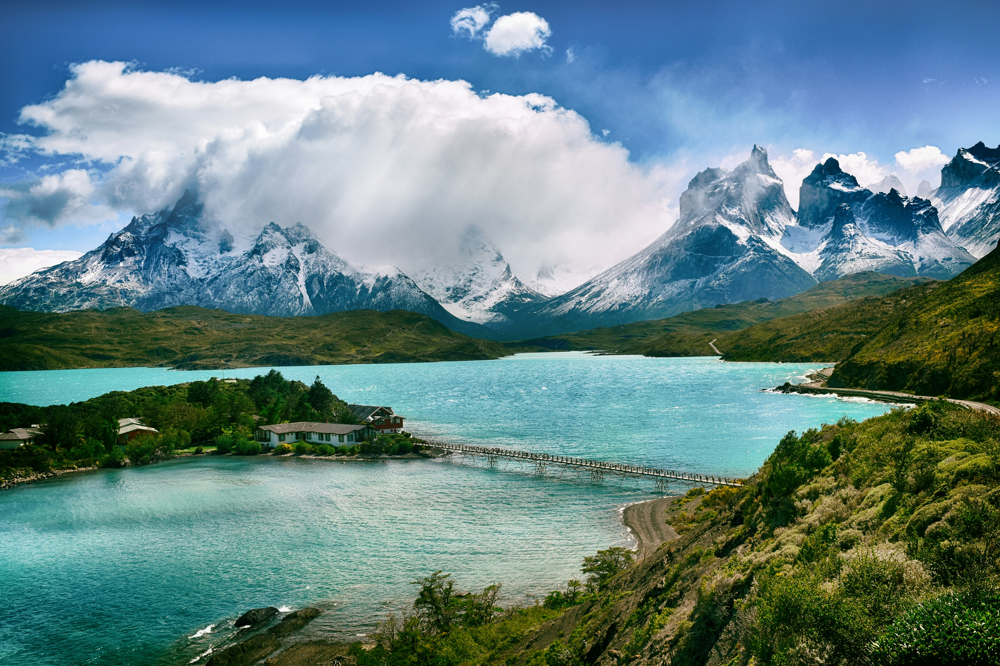
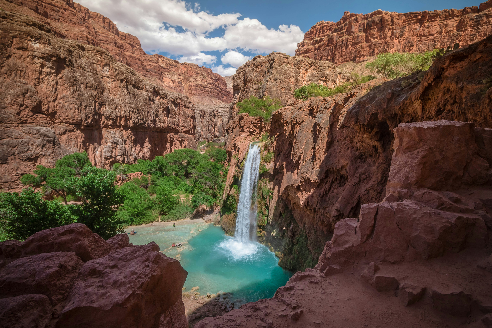

3 semanas en Filipinas
Sumergite en las aguas cristalinas de El Nido, explorá los arrozales de Banaue y descubrí la vibrante Manila.
Sumergite en las aguas cristalinas de El Nido, explorá los arrozales de Banaue y descubrí la vibrante Manila.

Subí al Teide, relajate en las playas del sur y disfrutá de la gastronomía canaria en un destino de clima eterno.

Explorá el cruce de Shibuya, descubrí los templos de Asakusa y deleitate con la gastronomía callejera de Shinjuku.

Caminá por las calles empedradas del ombligo del mundo, visitá Machu Picchu y descubrí la cultura inca en su máxima expresión.

Hacé trekking entre glaciares y lagos turquesa, maravillate con los picos graníticos y conectá con la Patagonia más salvaje.

Asombrate con uno de los paisajes más imponentes del planeta, recorré sus senderos y contemplá millones de años de historia geológica.